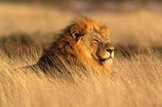
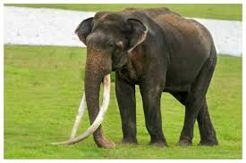

1.LION
The lion is a large cat of the genus Panthera native to Africa and India. It has a muscular, broad-chested body, short, rounded head, round ears, and a hairy tuft at the end of its tail. It is sexually dimorphic; adult male lions are larger than females and have a prominent mane
2.TIGER

The tiger is the largest living cat species and a member of the genus Panthera. It is most recognisable for its dark vertical stripes on orange fur with a white underside. An apex predator, it primarily preys on ungulates, such as deer and wild boar.
3.CHEETAH

The cheetah (Acinonyx jubatus) is a large cat native to Africa and central Iran. It is the fastest land animal, estimated to be capable of running at 80 to 128 km/h (50 to 80 mph) with the fastest reliably recorded speeds being 93 and 98 km/h (58 and 61 mph), and as such has evolved specialized adaptations for speed, including a light build, long thin legs and a long tail. It typically reaches 67–94 cm (26–37 in) at the shoulder, and the head-and-body length is between 1.1 and 1.5 m (3 ft 7 in and 4 ft 11 in). Adults weigh between 21 and 72 kg (46 and 159 lb). Its head is small and rounded, with a short snout and black tear-like facial streaks. The coat is typically tawny to creamy white or pale buff and is mostly covered with evenly spaced, solid black spots. Four subspecies are recognised.
4.ELEPHANT
Elephants are the largest existing land animals. Three living species are currently recognised: the African bush elephant, the African forest elephant, and the Asian elephant. They are the only surviving members of the family Elephantidae and the order Proboscidea.